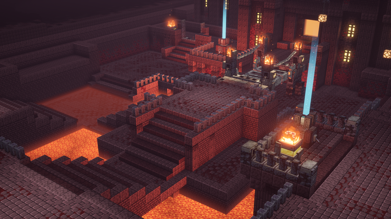

Structures are pre-generated buildings and formations in Minecraft that players can explore and utilize.
Structures are naturally generated buildings and locations that appear throughout Minecraft
worlds. Players can explore them to find resources, loot, and challenges. Some structures are
peaceful, while others contain dangerous enemies. Understanding structures can help players
navigate the world and find valuable items.

A Nether Fortress in Minecraft
Exploring structures help players collect rare items, discover new dimensions, and progress
through the game. Many important materials and encounters are found within these locations. This
makes exploring structures a key part of Minecraft gameplay.
Minecraft contains many different generated structures, each with unique loot, enemies, and
exploration opportunities. If you want a more detailed information about every structure, including
spawn locations and rewards, you can visit the officical Minecraft Wiki guide below.